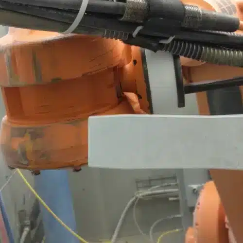

01
PRODUCTION EQUIPMENT & AUTOMATION
생산설비 · 자동화설비

생산라인 곳곳에 쌓이는 오염물을
설비 구조에 맞춰 세척합니다.
생산설비와 자동화설비에는 공정이 반복되면서 오일과 그리스, 도료 비산 잔류물, 수지, 접착제와 각종 생산 잔류물이 쌓입니다. 사진의 포장기처럼 제품 잔류물이 이송부와 성형부 사이에 눌어붙으면 손이 닿지 않는 부위부터 관리가 어려워집니다.
드라이아이스 세척은 설비를 연마하는 방식이 아니며, 노즐과 분사 조건을 조절해 복잡한 기계 구조와 좁은 부위의 세척에 활용할 수 있습니다. Cold Jet 자료에 따르면 로봇의 경우 센서·배선·정밀 구동부 주변의 용접 스패터와 도료 비산 잔류물을 제거하는 데 사용됩니다.
적용 조건에 따라 설비를 완전히 분해하지 않고 현장에서 세척할 수 있는 경우도 있어, 분해·재조립에 드는 정비시간을 줄이는 데 도움이 될 수 있습니다.
대표 대상
- 생산기계 · 성형부 · 이송부
- 산업용 로봇 · 관절부 · End-of-arm tooling
- 컨베이어 벨트 · 체인 · 롤러 · 가이드레일
- 구동부 · 센서 하우징 · 케이블 하니스
주요 오염물
오일 · 그리스 · 도료 비산 잔류물 · 수지 · 접착제 · 용접 스패터 · 생산 잔류물


 HEAT EXCHANGER분진 · 고착 오염 → 얇은 핀과 구조 고려
HEAT EXCHANGER분진 · 고착 오염 → 얇은 핀과 구조 고려